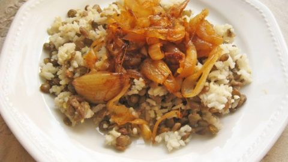

Majadra

A fragrant Mediterranean meal
Majadra is a dish consisting of cooked lentils together with groats,
generally rice, and garnished with sautéed onions.
Ingredients
For the lentils:
- ¾ cup brown or black lentils
- 1 bay leaf
- 2 cups water
- 2 onions
- More olive oil
For the rice:
- 1 ½ cup rice
- 2 tbsp olive oil
- 3 cups water, boiling
- 2 cloves garlic, peeled and crushed
- 1 ½ tsp salt
- 1 tsp powdered cumin
- ¼ tsp ground cinnamon
- More salt and pepper to taste
Instructions
For the lentils:
-
Pick over and rinse the lentils. Simmer them in the water,
with the bay leaf, until they are soft but not mushy.
Depending on the quality of the lentils, this might take 30-40
minutes.
Do not add salt. Add more water if it looks like they’re drying out,
but if they finish cooking and there’s water left over,
just drain them and return them to the pot.
-
Add salt to taste after the lentils are done. Remove the bay leaf.
For the rice:
- Rinse the rice and allow it to drain almost dry.
-
Heat the oil gently and add the rice, stirring to coat the grains with
oil.
-
When the rice has become transparent, add the garlic.
Stir half a minute, then add the salt and the water.
-
Bring to a boil, then cover the pot and lower the flame to the lowest
setting.
Cook the rice until all the water has evaporated and the grains are
tender and separate.
- While the rice is cooking, slice the onions thinly.
-
Pour 2 tablespoons of olive oil into a non-stick pan and caramelize the
onions over the lowest possible flame,
stirring once in a while. You want them very soft and golden, not brown
and crisp.
-
When the onions are done – in 10-15 minutes – add the cumin, cinnamon
and a little salt and pepper.
-
Final step: Fluff the rice with a fork. Combine the cooked lentils and
the rice, mixing gently with the fork so as not to mash them.
Stir some of the caramelized onion in, and top the dish with the rest of
the onions.